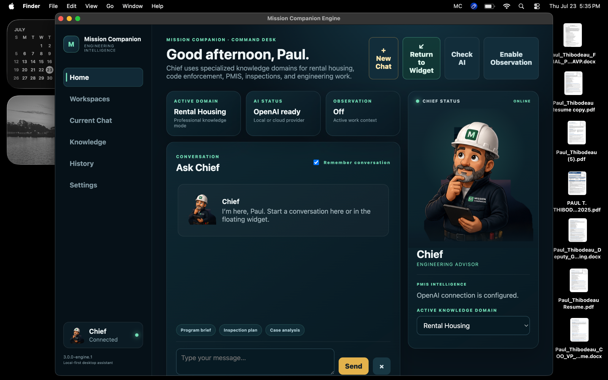
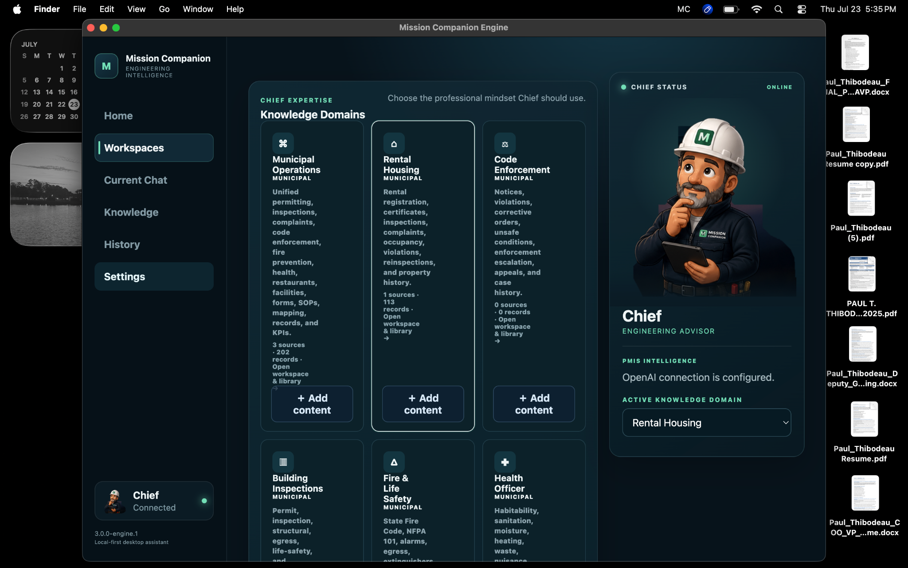
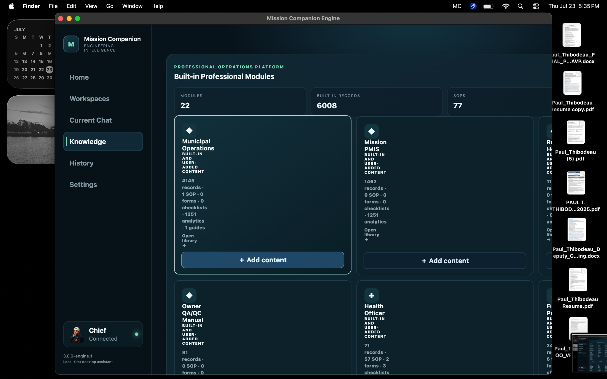
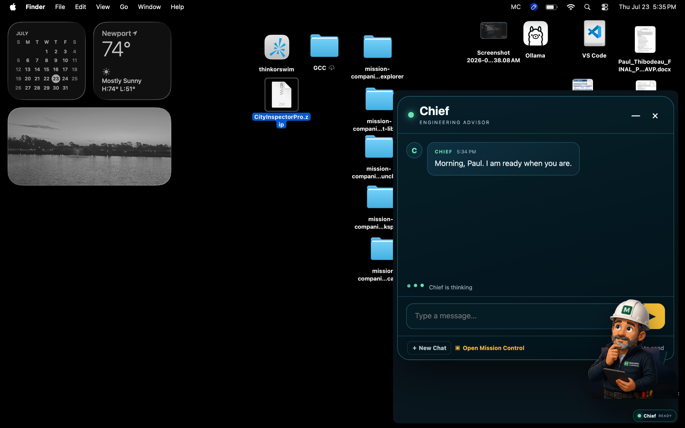
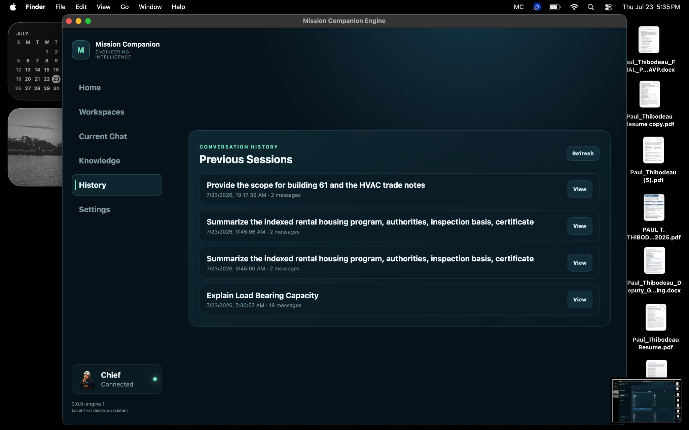

AI Workspace
Desktop-first engineering assistant with OpenAI, local-model, and provider-ready architecture.
AI ENGINEERING WORKSPACE
A desktop platform that combines AI, professional knowledge management, document indexing, persistent memory, and domain-specific workspaces into one engineering advisor.

PRODUCT CAPABILITIES
Mission Companion organizes AI, domain knowledge, indexed records, and project memory into one desktop operating environment.
Desktop-first engineering assistant with OpenAI, local-model, and provider-ready architecture.
Specialized workspaces for municipal operations, rental housing, PMIS, QA/QC, fire, health, and inspections.
Conversation history, session recall, context continuity, and workspace-aware interaction.
User-managed and built-in libraries for SOPs, forms, manuals, specifications, guides, and records.
Active-domain selection, context classification, behavior rules, and professional response framing.
Structured support for PMIS, inspections, municipal operations, technical publications, and field decisions.
PRODUCT GALLERY




SYSTEM ARCHITECTURE
WHAT THIS DEMONSTRATES
POSITIONING
Mission Companion is the clearest expression of that approach: domain expertise, information architecture, AI, and software brought together around real professional work.